마지막 주의 하루는
공원에서 천천히 🌳
Our last week, and today was deliberately unhurried. No posters, no worksheets — just the park, the pool, and a long afternoon of being outside together.
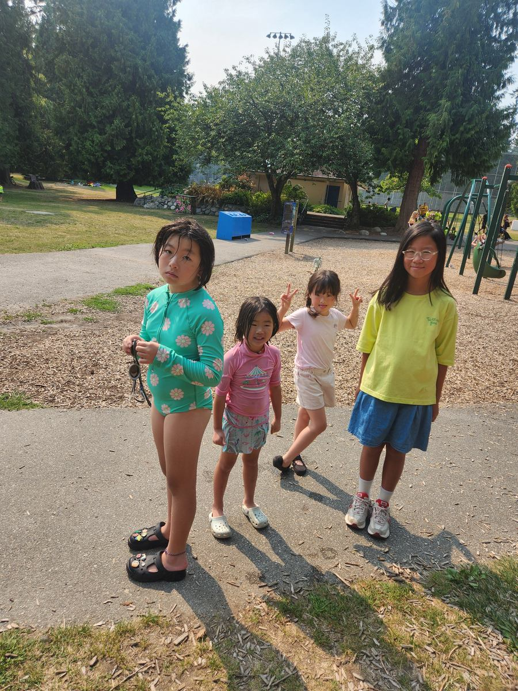
목요일, 다이엔 선생님 댁에서 졸업식과 파티가 있습니다
안녕하세요 학부모님. 썸머캠프가 이번 주 금요일로 마지막 날이 됩니다. 그동안 아이들과 정 들고 즐거운 시간이었습니다.
다이엔 선생님께서 아이들 졸업식을 해주신다고 하셔서, 준비를 위해 아래 내용을 부탁드립니다.
- 영문 이름 — 졸업장 준비를 위해 아이의 영문 이름을 알려주세요
- 목요일 등원 — 아이를 다이엔 선생님 댁으로 드롭해 주세요
- 목요일 하원 — 픽업도 다이엔 선생님 댁에서 부탁드립니다
- 주소 — 내일 다시 확인해서 안내드리겠습니다
그동안 믿고 맡겨주셔서 진심으로 감사합니다 💕
🌳 Under the Big Cedar A slower kind of day
There is a huge old cedar at the park with roots wide enough to sit on, and it is reliably the most popular spot on any hot afternoon. Snacks were consumed in its shade.
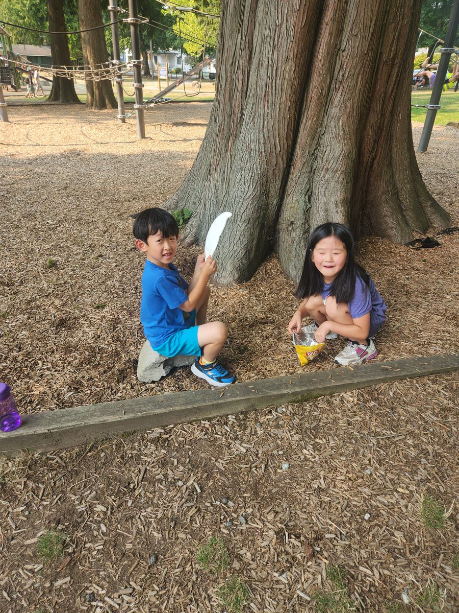
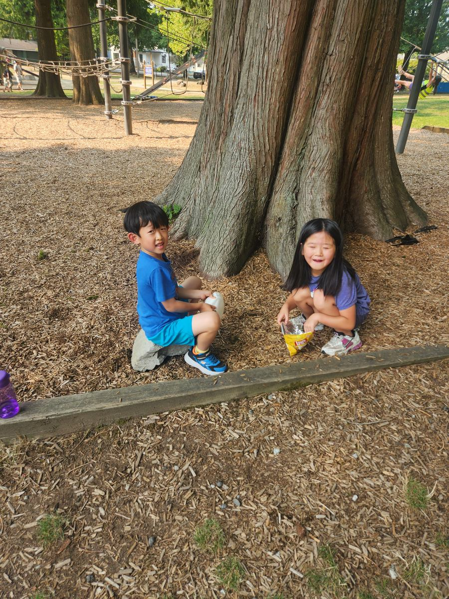
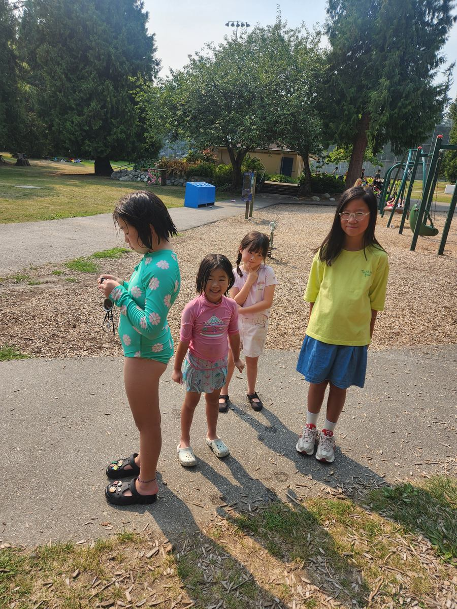
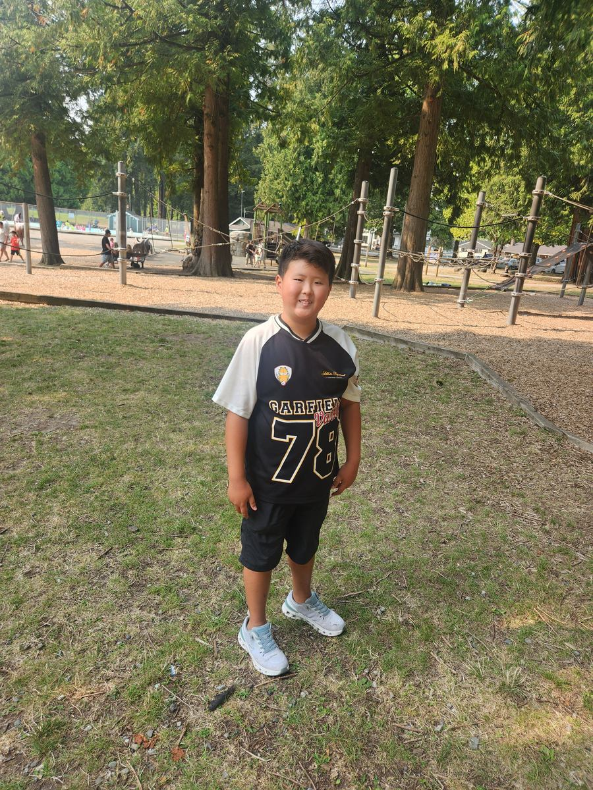
💦 Pool & Swings Blue Mountain
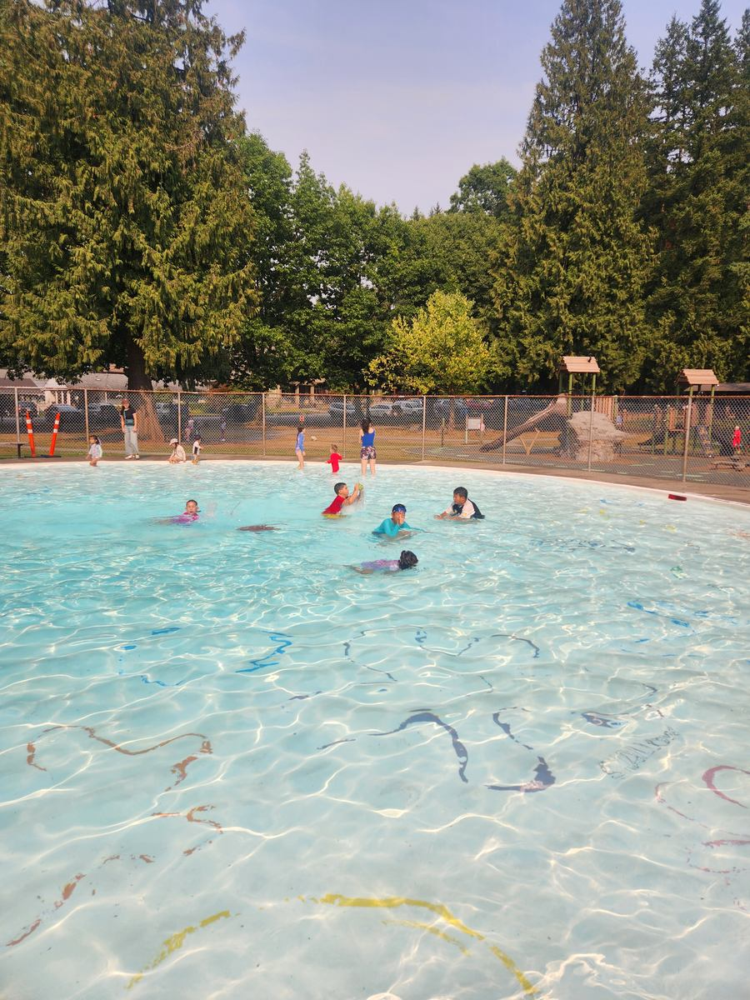
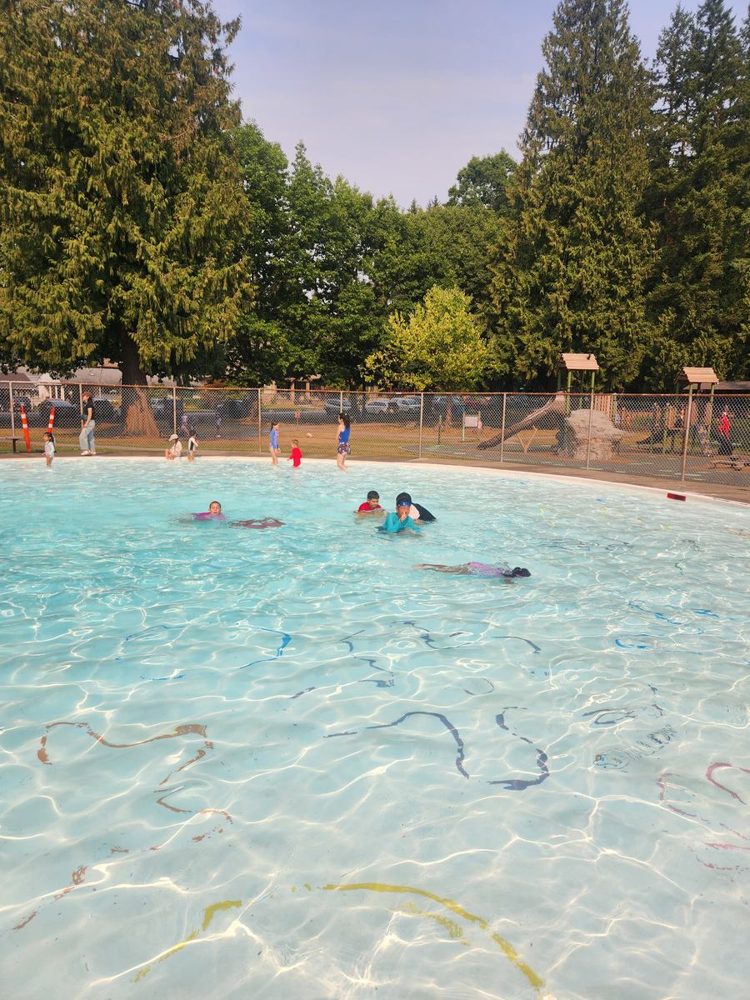
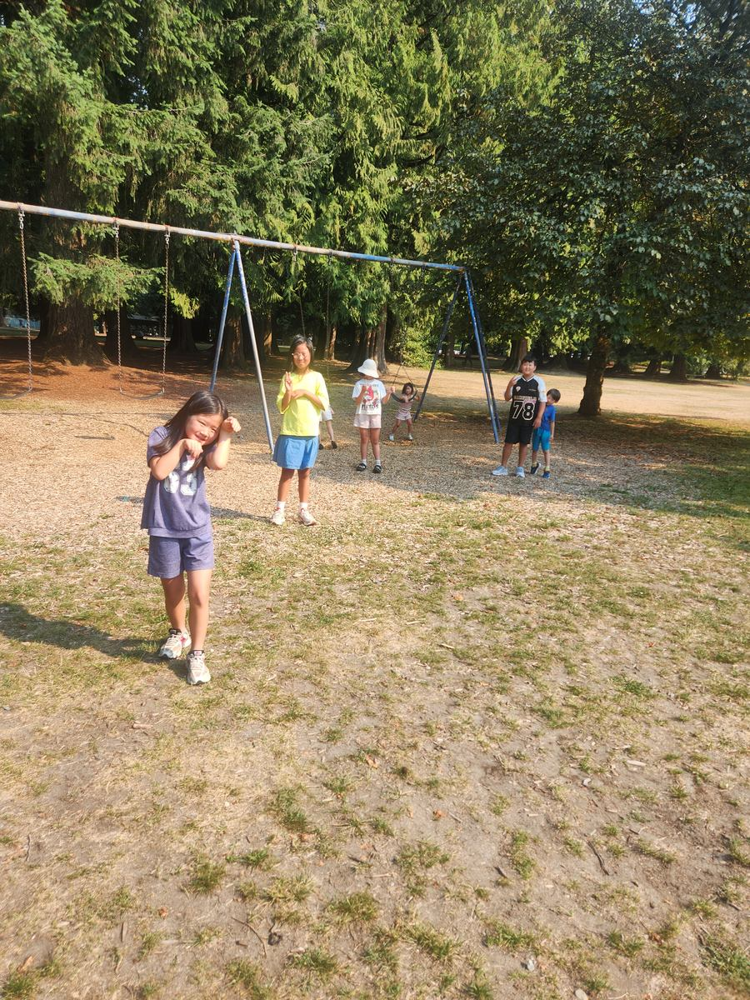
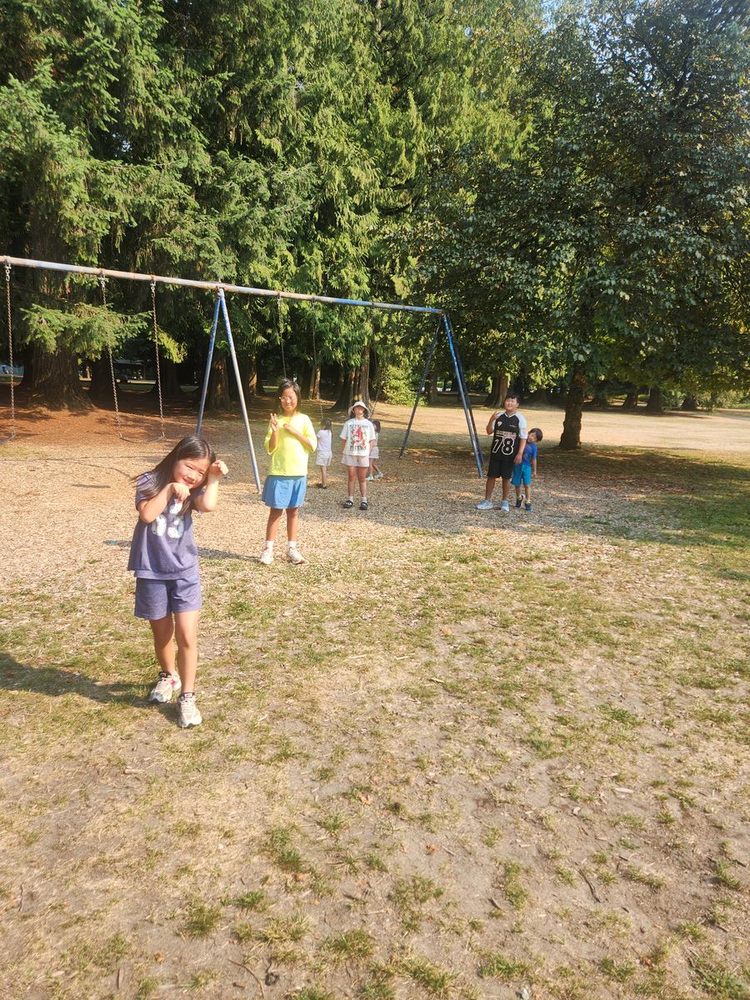
🍚 Lunch Braised chicken & kimchi
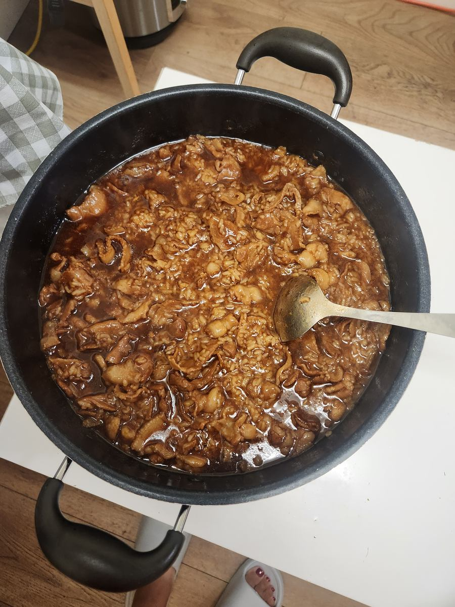
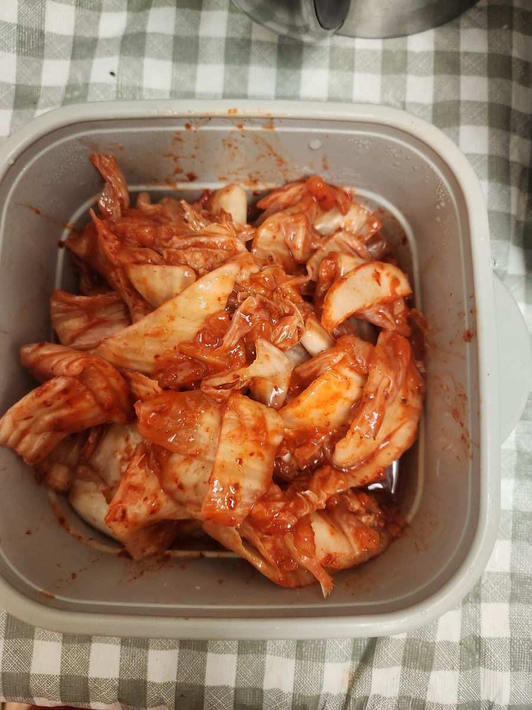
This week: the last presentations run through Tuesday and Wednesday, the graduation and party at Teacher Diane's house is on Thursday, and camp finishes on Friday, August 28.
Eight weeks of science, math, writing and presentations — and today, a tree and a pool. Both count. 🌳